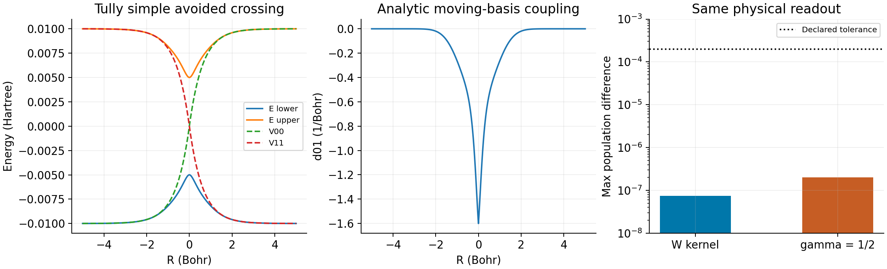
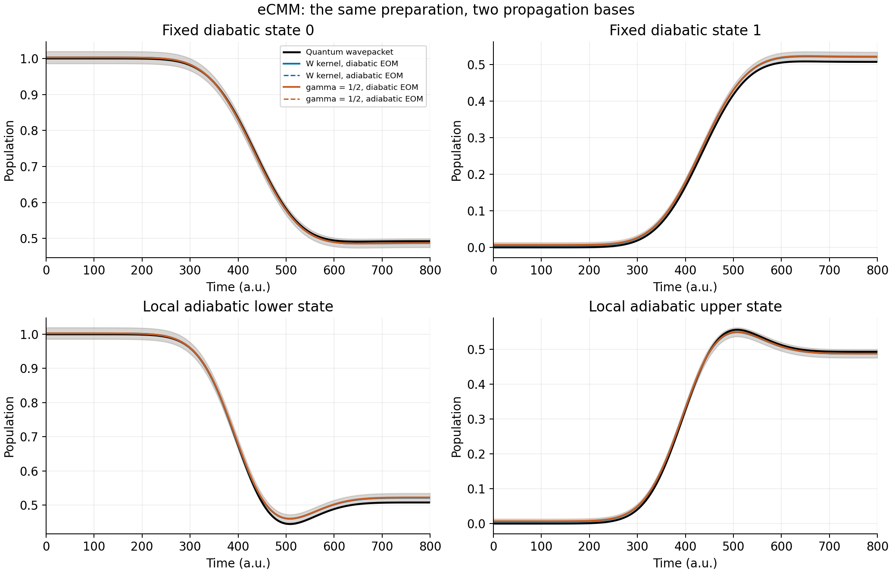
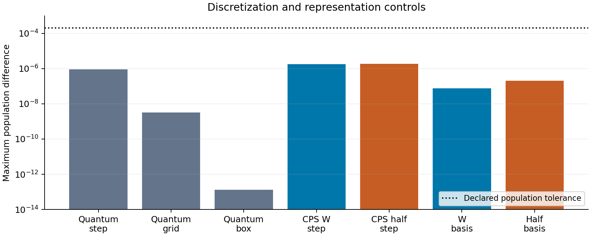

MQC Series - Part VIII
Diabatic and Adiabatic CPS Dynamics
Diagonalizing the electronic potential does not remove nonadiabatic dynamics. It moves the coupling into the coordinate dependence of the electronic basis. Deriving the resulting trajectory equations requires transforming the canonical structure as carefully as the energy.
Part VI established the CPS kernel and its dual; Part VII separated exact electronic representation from approximate coupled trajectories. This part derives the diabatic and adiabatic equations of the same classical mapping Hamiltonian, without skipping the nuclear momentum transformation, and tests their equivalence on one Tully model.
Scope. Use one nuclear coordinate and a complete, finite \(F\)-state model with a smooth square unitary matrix \(U(R)\). Set \(\hbar=1\). The result is an exact change of variables within the chosen classical eCMM dynamics, not a proof of exact quantum electron–nuclear dynamics. Here \(P=M\dot R\) is physical nuclear momentum; \(\Pi\) will denote a different, canonical momentum after the basis change.
1. The Diabatic Hamiltonian and Canonical Equations
Start in a fixed orthonormal diabatic electronic basis. The physical model is a nuclear kinetic operator plus a Hermitian electronic potential matrix. Its scalar CPS mapping Hamiltonian is
The mapping coordinates and momenta obey \(\{x_n,p_m\}=\delta_{nm}\); the nuclear variables obey \(\{R,P\}=1\). All nuclear–electronic cross brackets initially vanish. For the real symmetric potential used below, the same Hamiltonian reads
Differentiate with respect to the real canonical variables, holding \(R\) fixed:
The complex electronic equation follows by combining these two real equations:
This is a classical Hamilton equation for mapping variables. Its TDSE-like form alone does not prove that the coupled nuclear trajectories are quantum exact. The real-variable quadratic expression above assumes real symmetric \(V\); the complex expression \(z_d^\dagger Vz_d\) remains valid for general Hermitian \(V\).
To carry out a coordinate-dependent complex transformation, first derive the complex bracket explicitly:
Thus \(\dot z_{d,n}=-i\,\partial H_d/\partial z_{d,n}^*\). Equivalently, a formal complex canonical pair is \(q_n=z_{d,n}\), \(\pi_n=i z_{d,n}^*\). This notation retains the original real degrees of freedom; \(z\) and \(z^*\) are not additional independent physical amplitudes.
Now differentiate the same Hamiltonian with respect to nuclear variables. Write \(V'=\partial_RV\):
The CPS sphere is an invariant surface of these equations. Since \(V^\dagger=V\),
Therefore an initial sample with \(z_d^\dagger z_d=s=1+F\gamma\) remains on that sphere under the continuous equations. The canonical brackets are defined in the embedding mapping phase space; finite-step numerical conservation must still be checked.
2. A Moving Electronic Basis Changes the Brackets
At each nuclear position, choose the columns of \(U(R)\) as orthonormal adiabatic eigenvectors:
The basis rotation depends on \(R\), so its derivative must be included. Define the nonadiabatic coupling matrix
Differentiating \(U^\dagger U=I\) gives \((U^\dagger)'U+U^\dagger U'=0\). Substituting the definition of \(d\), then multiplying by \(U^\dagger\) on the right, gives the first identity below. Multiplication of \(d=U^\dagger U'\) by \(U\) gives the second:
The energy expressed using \(z_a\) is straightforward:
But a simple-looking energy does not guarantee unchanged canonical brackets. Applying the old brackets to the new amplitude gives
Meanwhile the electronic bracket is unchanged:
The new cross bracket \(\{z_a,P\}=-dz_a\) is the crucial change. Keeping \(P\) as physical momentum is legitimate, but then the nuclear and electronic brackets are coupled. Treating \((R,P,z_a)\) as independent canonical variables would discard this coupling.
3. Constructing the Adiabatic Canonical Momentum
Seek a new nuclear momentum \(\Pi=P+\mathcal A(R,z_a)\) that commutes with the electronic amplitudes. Here \(\Pi\) denotes nuclear canonical momentum, not the rank-one projector notation used in Part VI. Because \(\mathcal A\) contains no \(P\),
Setting this to zero requires \(\partial\mathcal A/\partial z_{a,i}^*=i(dz_a)_i\). One choice is
This is a real scalar: \(\mathcal A^*=-iz_a^\dagger d^\dagger z_a=iz_a^\dagger dz_a\). Consequently,
The electronic brackets retain their canonical complex form. In these variables the governing Hamiltonian is
This is the original classical mapping Hamiltonian in new canonical coordinates. It is not obtained by taking a CPS symbol of the square of a quantum covariant momentum. A matrix product need not map to the ordinary product of its symbols; those are different constructions.
An equivalent check uses the canonical one-form, up to a total differential:
In this identity the exterior differentials describe phase-space changes, while the unadorned matrix \(d=U^\dagger U'\) is the NAC. Both derivations identify the same canonical momentum.
4. Hamilton Equations for the Moving Electronic Variables
Only now apply standard Hamilton equations to \(H_a^{\mathrm{can}}\). Temporarily write \(z=z_a\) and define \(v=(\Pi-\mathcal A)/M=P/M\). The coordinate equation is
For the electronic equation, differentiate the kinetic term at fixed \(R,\Pi\):
The potential contributes \(\partial_{z_i^*}(z^\dagger Ez)=(Ez)_i\), while the trace offset has no electronic derivative. Combining the two terms gives
The minus sign in the NAC term follows from \((-i)(-i)=-1\). Restoring the subscript,
The first term produces electronic phase evolution on diagonal energies. The second describes amplitudes in a basis that rotates as the nuclei move. Adiabatic representation does not mean Born–Oppenheimer single-surface dynamics.
5. Deriving the Physical Nuclear Force
The canonical momentum equation gives \(\dot\Pi\), not yet \(\dot P\). A prime denotes a derivative with respect to \(R\). Differentiating the Hamiltonian at fixed \(\Pi,z,z^*\) gives
Since \(P=\Pi-\mathcal A\), the physical force is \(\dot P=\dot\Pi-\dot{\mathcal A}\). The total derivative of \(\mathcal A=i z^\dagger d(R)z\) contains three terms:
The middle term is \(v\partial_R\mathcal A\). The electronic equation and its adjoint are
where the sign in the adjoint uses \(d^\dagger=-d\). Substitute separately into the other two terms:
The \(d^2\) terms cancel, leaving
Subtract this result from the canonical momentum equation. The \(v\partial_R\mathcal A\) terms also cancel:
The extra force is therefore required by the same Hamiltonian that generated the electronic NAC term. Keeping the NAC in electronic propagation while dropping its corresponding force changes the coupled dynamics.
6. The Full Gradient Matrix and the Two-State Equations
To identify the matrix in the force, define \(G=U^\dagger V'U\). Differentiate all three factors in \(E=U^\dagger VU\):
Thus
The diagonal is the energy gradient; the offdiagonal part is the energy gap times the NAC. Since a commutator has zero trace, \(\operatorname{Tr}G=\operatorname{Tr}E'\). The complete physical-momentum equations are therefore
For the real two-state example, take
Then \(G_{12}=G_{21}=\Delta E\,d_{12}\), and the individual equations are
The last line makes the coherence-dependent nuclear force explicit. In the same real gauge, \(\mathcal A=-2d_{12}\operatorname{Im}(z_1^*z_2)\): the shift between canonical and physical momentum depends on the relative mapping phase.
Two consistency checks follow directly. First, the anti-Hermitian electronic generator preserves the sphere:
Second, \(K_a=U^\dagger K_dU\) and \(G=U^\dagger V'U\) imply
Thus the nuclear force is identical in the two representations when evaluated on transformed versions of the same state. The numerical test below checks whether independent integrations preserve that equivalence.
7. Preparation, Propagation, and Physical Readout
A fair comparison starts from one physical preparation. For each sample draw \((R_0,P_0)\) from the specified nuclear distribution and draw an electronic direction uniformly on the CPS sphere. Define \(s=1+F\gamma\), and retain the initial weight
Start the diabatic integrator with \(z_{d,0}\). Start the adiabatic integrator with \(z_{a,0}=U^\dagger(R_0)z_{d,0}\), the same physical momentum \(P_0\), and the same weight. If a canonical adiabatic integrator is used instead, initialize \(\Pi_0=P_0+\mathcal A(R_0,z_{a,0})\). Assigning state index zero independently in both bases generally prepares different states.
| Stage | Diabatic route | Adiabatic route |
|---|---|---|
| Electronic input | Full \(V(R),V'(R)\). | \(E(R),E'(R),d(R)\), with a consistent smooth frame. |
| Propagation | Use \(-iVz_d\) and \(-\operatorname{Tr}(K_dV')\). | Use \(-iEz_a-vdz_a\) and \(-\operatorname{Tr}(K_aG)\). |
| Nuclear momentum in this test | Physical \(P=M\dot R\). | The same physical \(P\); the code integrates the derived equations directly. |
| Time stepping | Re-evaluate \(V,V'\) at every RK4 stage. | Re-evaluate \(E,E',d\) at every RK4 stage. |
| Final observable | Choose a physical measurement basis. | Transform each sample into that same measurement basis before averaging. |
The force uses the Hamiltonian kernel \(K_\gamma\). Physical readout uses the matched dual, recalled from Part VI:
For adiabatic propagation, fixed diabatic populations are obtained from
Conversely, the diabatic integrator gives local adiabatic populations by transforming its sample estimator with \(U^\dagger(R_\alpha)\) and \(U(R_\alpha)\) before averaging. A rotation at the ensemble-average geometry is a different operation. The quantum reference uses the matching position-resolved adiabatic projector before integrating over nuclear position.
The two parameter choices are both full-sphere scalar eCMM calculations. The shorthand “CPS W” means the W kernel, and “CPS half” means \(\gamma=1/2\):
| Choice, \(F=2\) | Sphere | Force kernel | Readout dual |
|---|---|---|---|
| W: \(\gamma=(\sqrt3-1)/2\) | \(z^\dagger z=\sqrt3\) | \(K_W=zz^\dagger-\gamma_W I\) | \(D_W=K_W\) |
| \(\gamma=1/2\) | \(z^\dagger z=2\) | \(K=zz^\dagger-I/2\) | \(D=3zz^\dagger/4-I/4\) |
The half choice shares the oscillator offset of ordinary MMST in this convention, but the present spherical sampling and matched-dual estimator are not the complete full-space MMST/LSC workflow. The W choice corresponds to the self-dual spin-mapping representation when conventions are aligned. Neither label specifies a new nuclear force beyond the eCMM Hamiltonian above.
No sample estimator is clipped or normalized to trace one, and \(w_0\) is not multiplied into the single-trajectory force. Samples are averaged after their statistical weights have been attached to the physical estimator.
8. One Model, Two Propagation Bases, One Physical Comparison
Use ToyModel's simple avoided crossing, in atomic units:
The electronic state is the fixed diabatic projector \(|0\rangle\langle0|\). The nuclear wavepacket is
Trajectories sample the positive Wigner distribution of this minimum-uncertainty Gaussian. No momentum half-axis truncation is applied. Both propagation routes use identical nuclear samples and basis-related mapping samples representing the same initial phase-space state. Both gamma choices use the same electronic sphere directions scaled to their own radius.


The independently propagated diabatic and adiabatic branches use RK4 with a 1 a.u. step and retain all 801 output times through 800 a.u. All trajectories continue to the final time; there is no exit-based freezing. A smooth analytic angle frame supplies the energies, gradients, and NAC in the adiabatic branch. This is a controlled finite-time test, not an asymptotic scattering-channel study.
The nuclear quantum reference propagates the same two-component wavepacket with FFT Strang splitting on a periodic box [−20,20], 2048 grid points, and a 0.5 a.u. step. Its 1601 actual output points are retained. Fixed diabatic populations are component norms; local adiabatic populations project the wavefunction at each grid point before spatial integration.


Independent batches of 500 samples were added until all four population curves in both propagation bases had a maximum pointwise 95% half-width below 0.03 and the maximum cumulative-mean change was below 0.003 for three consecutive batches. Both gamma choices stopped at 16,500 samples. These are declared empirical finite-precision criteria; data-dependent stopping does not turn conventional pointwise intervals into simultaneous or optional-stopping coverage guarantees.
| Quantity, full time window | W kernel | \(\gamma=1/2\) |
|---|---|---|
| Maximum population difference between propagation bases | 7.38×10−8 | 2.02×10−7 |
| Maximum single-trajectory mapping-energy drift / Hartree | 4.65×10−7 | 5.12×10−7 |
| Maximum sphere-radius-squared drift | 5.61×10−9 | 6.93×10−9 |
| Maximum population difference from quantum reference, including sampling error | 0.01536 | 0.01584 |
| Maximum pointwise 95% half-width | 0.01676 | 0.01690 |
The population agreement between bases is much tighter than the statistical uncertainty because the samples are paired. It is an ensemble-mean statement: the largest individual-trajectory readout differences were about 9.4×10−5 and 8.2×10−5, respectively. No claim is made that finite-step trajectories coincide exactly.
At 800 a.u., the quantum fixed-diabatic state-0 population is 0.492393. W gives 0.486999 ± 0.011964 and gamma=1/2 gives 0.487267 ± 0.012012, using the pointwise intervals above. These data do not resolve an accuracy ranking between the two gamma choices.
Finite sampling also leaves a small constant normalization offset: the estimated total population is about 1.00827 for W and 1.00955 for half, equal to the finite-sample mean of the initial weight up to integration error. The initial population deviations are about 0.00550 and 0.00670. These offsets are retained rather than removed by trace normalization.
Discretization was checked separately from sampling. The quantum tests change one numerical parameter at a time; the trajectory step test uses the same 50 samples and compares the complete common-time population curves:


| Control | Maximum population change | Scope |
|---|---|---|
| Quantum step: 0.5 → 0.25 a.u. | 9.09×10−7 | Fixed box and grid |
| Quantum grid: 2048 → 4096 points | 3.16×10−9 | Fixed box and step |
| Quantum box: [−20,20] → [−40,40] | 1.29×10−13 | Fixed spatial spacing and step |
| Trajectory step: 1 → 0.5 a.u., W | 1.81×10−6 | 50 paired initial samples |
| Trajectory step: 1 → 0.5 a.u., half | 1.88×10−6 | 50 paired initial samples |
Every population change is below 2×10−4. The quantum norm error is below 1.4×10−12, and probability within 2 Bohr of a box edge is below 8.7×10−15. Position and momentum expectation differences also pass their separate 0.002 a.u. budgets. The 50-sample step check is not presented as a half-step rerun of all 16,500 trajectories; energy, sphere, and basis diagnostics cover the complete production ensemble.
Related implementation controls include frozen-nuclear comparison with a matrix exponential, the moving-frame chain rule, full gradient reconstruction, and a refined short-time comparison with ToyModel's existing ECMM splitting integrator. All 28 associated ToyModel tests passed. Formal RK4 order is checked on a smooth LVC control: the Tully potential is only C1 at zero, so an ideal fourth-order ratio across its derivative junction is not assumed.
The algebra involving \(d′\) is understood separately on the two sides of zero. At the junction, the final physical-momentum equations extend continuously: the potential gradient and the NAC remain continuous, and the derivative of the NAC has canceled from the force. No impulsive force is introduced at the crossing.
9. What the Agreement Establishes
The paired calculation supports a precise conclusion: with the same preparation, matched estimator, full gradient force, and a consistent moving frame, the independently propagated branches reproduce the same classical eCMM dynamics in diabatic and adiabatic coordinates.
The quantum comparison asks a separate question. Its maximum population discrepancy is about 0.015–0.016 at the current sampling precision, and includes initial and later sampling error. It cannot all be assigned to classical nuclear backreaction error. Neither self-duality nor a canonical coordinate transformation restores the quantum terms omitted when adopting classical coupled trajectories.
This model is traceless: \(\operatorname{Tr}V=0\). Thus the explicit scalar trace offset vanishes here. Gamma still changes the sphere radius and the representation/readout, but this benchmark does not isolate the trace-offset contribution to the force in a general Hamiltonian.
Completeness means completeness within the defined finite model, so \(U\) is square and unitary. A truncated, geometry-dependent ab initio electronic subspace can require additional projection or geometric terms. Multidimensional connections, degeneracies, global gauge patches, derivative-coupling interfaces, NaF forces, and real-system simulations are outside the present numerical validation.
10. Code, Data, and Sources
The calculation was performed with ToyModel. The downloadable adapter below contains the kernel, dual, smooth-frame helper, and paired integrator with their minimal dependencies, so it runs independently of a private project installation. The runner preserves the original random-number pool sizes and seeds, and reproduces the same accepted sampling rule.
- cps_basis_dynamics.py: standalone dynamics adapter; NumPy.
- cps_basis_benchmark.py: quantum controls, paired propagation, sampling statistics, and dense-data figures; NumPy, SciPy, Matplotlib.
- cps_basis_controls.py: plot the recorded discretization and representation controls; Matplotlib.
- Validation metadata: protocol, seeds, result summaries, numerical controls, and displayed-curve checks.
- W data: diabatic propagation and adiabatic propagation.
- Half data: diabatic propagation and adiabatic propagation.
- Quantum reference and potential/NAC samples.
python assets/code/mqc/cps_basis_benchmark.py --output results --validate
python assets/code/mqc/cps_basis_benchmark.py --output smoke --smoke 50
python assets/code/mqc/cps_basis_benchmark.py --output figures --plot-data assets/data/mqc-viiiThe full command uses independent batches until the declared stopping rule is met. The smoke command checks execution only. CSV rows retain every output time; trajectory tables contain eight estimator means followed by their standard errors. No clipping, trace renormalization, statistical smoothing, or figure-path simplification is used.
- David Tong, Classical Dynamics, Chapter 4, The Hamiltonian Formalism. Standard Hamilton equations, Poisson brackets, and canonical transformations.
- X. He, Z. Gong, B. Wu, and J. Liu, “Negative Zero-Point-Energy Parameter in the Meyer–Miller Mapping Model for Nonadiabatic Dynamics,” Journal of Physical Chemistry Letters 12, 2496–2501 (2021). Journal · Open manuscript. Constrained mapping Hamiltonian and matched inverse representation; see also the explicit conventions in Part VI.
- J. E. Runeson and J. O. Richardson, “Generalized spin mapping for quantum-classical dynamics,” Journal of Chemical Physics 152, 084110 (2020). Journal · Open manuscript. Generalized Stratonovich–Weyl mapping and classical trajectories; gamma conventions must be aligned before comparison.